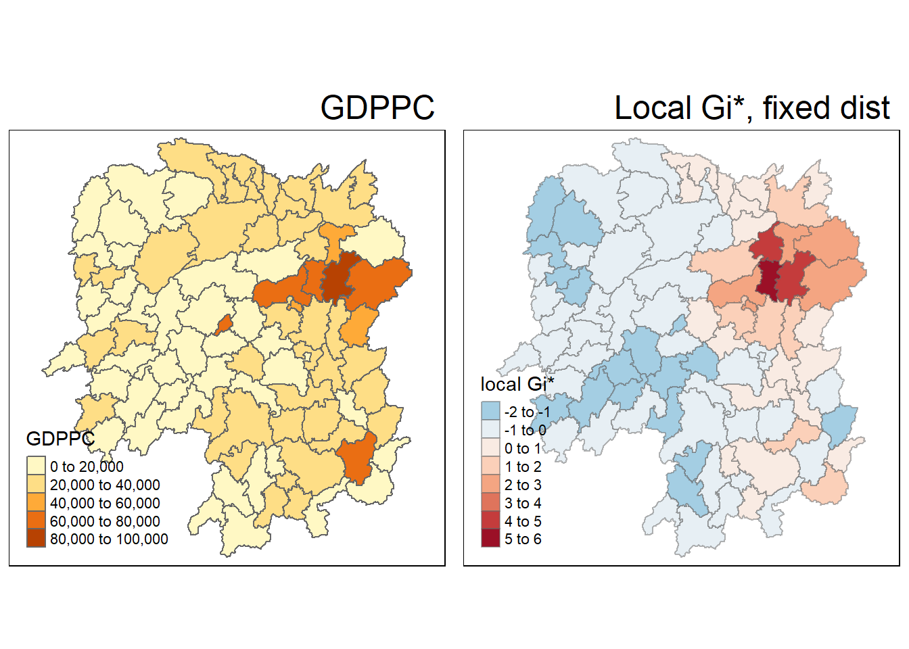
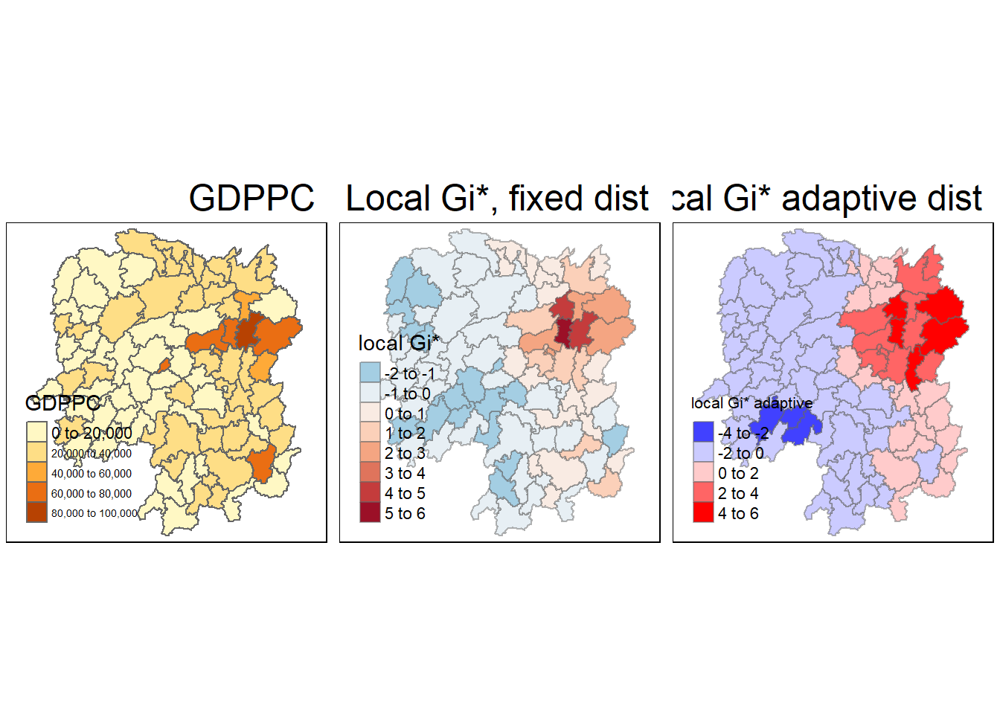

Rows: 88 Columns: 29
── Column specification ────────────────────────────────────────────────────────
Delimiter: ","
chr (2): County, City
dbl (27): avg_wage, deposite, FAI, Gov_Rev, Gov_Exp, GDP, GDPPC, GIO, Loan, ...
ℹ Use `spec()` to retrieve the full column specification for this data.
ℹ Specify the column types or set `show_col_types = FALSE` to quiet this message.
Characteristics of weights list object:
Neighbour list object:
Number of regions: 88
Number of nonzero links: 448
Percentage nonzero weights: 5.785124
Average number of links: 5.090909
Weights style: W
Weights constants summary:
n nn S0 S1 S2
W 88 7744 88 37.86334 365.9147
3.6 Cluster & Outlier Analysis
use of LISA (Local Indicators of Spatial Association) to detect clusters/outliers from Hunan GDPPC
3.6.1 Local Moran’s I
(Global) Moran’s I is performed over the entire dataset, looking for pattern across all the datapoints considered
Local Moran’s I checks each individual datapoint for spatial correlation to detect individual clusters
localmoran() thus identifies a Local Moran’s I score for each of 88 regions
show code
fips <-order(hunan$County)localMI <-localmoran(hunan$GDPPC, rswm_q)print("Printing first 6 rows of `localMI`\n")
first we append the output coefficient matrix from localMI to hunan before mapping
show code
hunan.localMI <-cbind(hunan,localMI) %>%rename(Pr.Ii = Pr.z....E.Ii..)max_row <- hunan.localMI[which.max(hunan.localMI$Ii), ]print(paste0("The region of deepest blue is: ", max_row$County))
Characteristics of weights list object:
Neighbour list object:
Number of regions: 88
Number of nonzero links: 324
Percentage nonzero weights: 4.183884
Average number of links: 3.681818
Link number distribution:
1 2 3 4 5 6
6 15 14 26 20 7
6 least connected regions:
6 15 30 32 56 65 with 1 link
7 most connected regions:
21 28 35 45 50 52 82 with 6 links
Weights style: B
Weights constants summary:
n nn S0 S1 S2
B 88 7744 324 648 5440
3.8.3 Computing adaptive distance weight matrix
use knn with neighbours=8 (max) to enforce “smoothing of neighbour relationship”
note below, all 88 regions are “least connected” and “most connected”
use nb2listw to convert nb object to list of spatial weights
3.9.1 Computing Gi* statistics with Fixed Distance
Using wm62_lw from above, creating fixed distance to calculate Z-score for Getis-Ord’s Gi*-statistics
Z-score, higher value == greater intensity of clustering
(+) high clusters, (-) low clusters
cbind back to create hunan.gi SpatialPolygonDataFrame
show code
fips <-order(hunan$County)gi.fixed <-localG(hunan$GDPPC, wm62_lw)hunan.gi <-cbind(hunan, as.matrix(gi.fixed)) %>%rename(gstat_fixed = as.matrix.gi.fixed.)max_row <- hunan.gi[which.max(hunan.gi$gstat_fixed), ]print(paste0("The region of deepest blue is: ", max_row$County))
[1] "The region of deepest blue is: Wangcheng"
show code
head(hunan.gi, 5)
Simple feature collection with 5 features and 9 fields
Geometry type: POLYGON
Dimension: XY
Bounding box: xmin: 111.2145 ymin: 28.61762 xmax: 112.3013 ymax: 29.95847
Geodetic CRS: WGS 84
NAME_2 ID_3 NAME_3 ENGTYPE_3 County GDPPC Z.GDPPC lag_GDPPC
1 Changde 21098 Anxiang County Anxiang 23667 -0.049205949 24847.20
2 Changde 21100 Hanshou County Hanshou 20981 -0.228341158 22724.80
3 Changde 21101 Jinshi County City Jinshi 34592 0.679406172 24143.25
4 Changde 21102 Li County Li 24473 0.004547952 27737.50
5 Changde 21103 Linli County Linli 25554 0.076642204 27270.25
gstat_fixed geometry
1 0.43607584 POLYGON ((112.0625 29.75523...
2 -0.26550565 POLYGON ((112.2288 29.11684...
3 -0.07303367 POLYGON ((111.8927 29.6013,...
4 0.41301703 POLYGON ((111.3731 29.94649...
5 0.27307058 POLYGON ((111.6324 29.76288...
draw map:
from above, darkest red Local Gi region is Wangcheng
Variable(s) "gstat_fixed" contains positive and negative values, so midpoint is set to 0. Set midpoint = NA to show the full spectrum of the color palette.

::: callout-note ## Quiz: What statistical conclusion can you draw from the output above?
Wangcheng shows slightly higher Gi* value than Changsha, though both were identified earlier
similar colour palette as quadrant mapping earlier; red regions are high-high, blue regions are low-low
overall, looks like there is some agreement of spatial auto-correlation when analysed like this
:::
3.9.2 Computing Gi statistics using Adaptive Distance
Using knn_lw from above with 8 fixed neighours for each region
I guess “adaptive distance” means “whatever distance needed to clock as neighbours”
Some legend labels were too wide. These labels have been resized to 0.47, 0.47, 0.47, 0.43. Increase legend.width (argument of tm_layout) to make the legend wider and therefore the labels larger.
Variable(s) "gstat_fixed" contains positive and negative values, so midpoint is set to 0. Set midpoint = NA to show the full spectrum of the color palette.
Variable(s) "gstat_adaptive" contains positive and negative values, so midpoint is set to 0. Set midpoint = NA to show the full spectrum of the color palette.

Quiz: What statistical conclusion can you draw from the output above?
Using both fixed- and adaptive-distance neigbours generates similar results; values are largely in agreement
knn=8 feels like it’s not very logical, but maybe there’s not too much difference